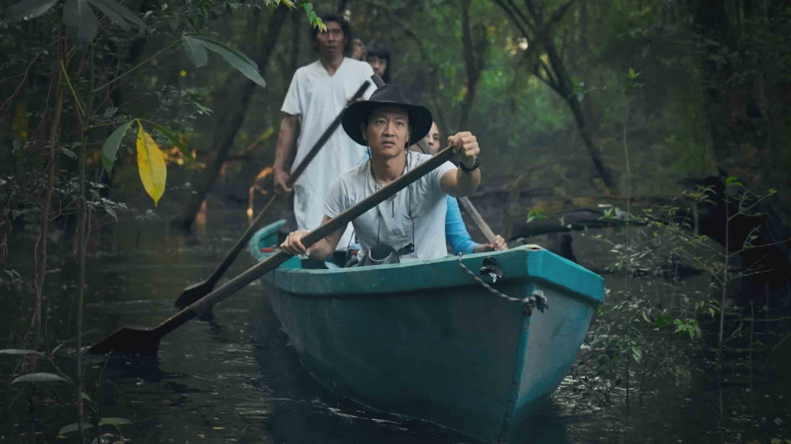
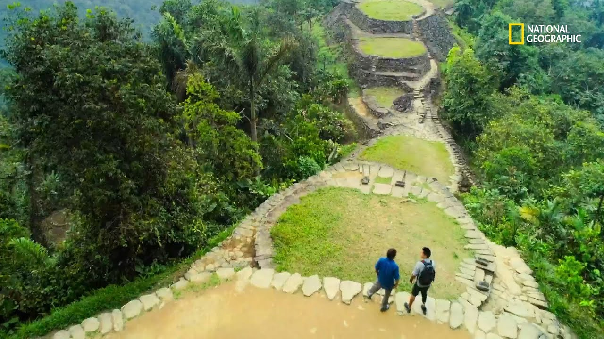

No acostumbro a ver muchas series, pero cuando lo hago, me interesan mucho las de tipo documental. La primera que se me vino a la memoria fue este programa de National Geographic con Albert Lin, el cual explora ciudades y eventos perdidos del pasado como El Dorado, la época de los templarios, los incas y más. Cada uno de los episodios explora una época y civilización diferente de la historia.
La serie sigue un hilo de historia y ciencia, en el cual Albert introduce al espectador en el contexto de una civilización perdida para después entrar de lleno en sus territorios. Las investigaciones tienen lugar en las edificaciones antiguas que dejaron estas personas antes de desaparecer.

Me gusta porque National Geographic presenta los episodios con un tono de misterio, sin dejar de lado los hechos reales científicos comprobados. Además, el final de cada capítulo deja al espectador en la expectativa de lo que pudiera haber pasado, pues a ciencia cierta no se conoce.
